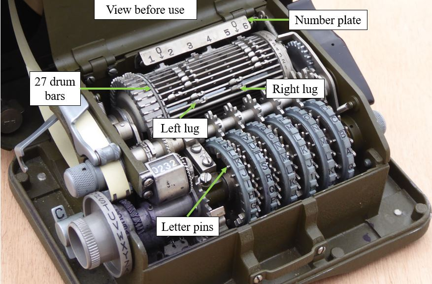

Basic Operation
Basic operation of the M-209 is relatively straightforward. Six adjustable key wheels on top of the box each display a letter of the alphabet. These six wheels comprise the external key for the machine, providing an initial state, similar to an initialization vector, for the enciphering process.
To encipher a message, the operator sets the key wheels to a random sequence of letters. An enciphering-deciphering knob on the left side of the machine is set to "encipher". A dial known as the indicator disk, also on the left side, is turned to the first letter in the message. This letter is encoded by turning a hand crank or power handle on the right side of the machine; at the end of the cycle, the ciphertext letter is printed onto a paper tape, the key wheels each advance one letter, and the machine is ready for entry of the next character in the message. To indicate spaces between words in the message, the letter "Z" is enciphered. Repeating the process for the remainder of the message gives a complete ciphertext, which can then be transmitted using Morse code or another method. Since the initial key wheel setting is random, it is also necessary to send those settings to the receiving party; these may also be encrypted using a daily key or transmitted in the clear.
Printed ciphertext is automatically spaced into groups of five by the M-209 for ease of readability. A letter counter on top of the machine indicated the total number of encoded letters, and could be used as a point of reference if a mistake was made in enciphering or deciphering.
The deciphering procedure is nearly the same as for enciphering; the operator sets the enciphering-deciphering knob to "decipher", and aligns the key wheels to the same sequence as was used in enciphering. The first letter of the ciphertext is entered via the indicator disk, and the power handle is operated, advancing the key wheels and printing the decoded letter on the paper tape. When the letter "Z" is encountered, a cam causes a blank space to appear in the message, thus reconstituting the original message with spaces. Absent "Z"s can typically be interpreted by the operator, based on context.

